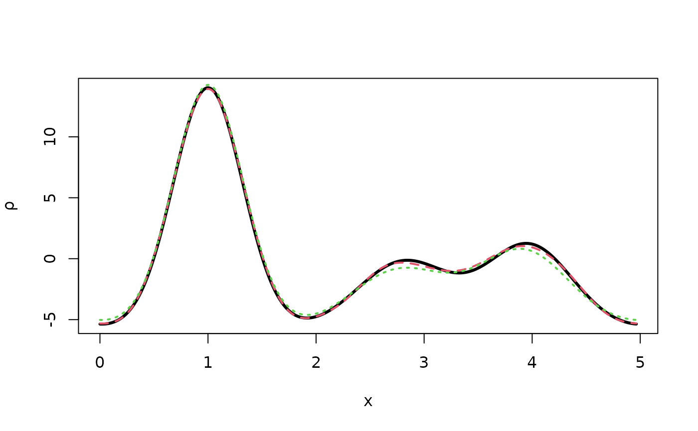

Generation of structure factors with errors
SFobs.RdThis function generates structure factors calculated starting from the given structure and subject to two types of errors: poissonian counting errors due to the statistical nature of the photons hitting the crystal and normal errors due to the slight random shifting of atoms position in all the unit cells forming the lattice.
Usage
sfobs(hidx, sdata, vx0err = NULL, ntrialP = 100, ntrialG = 100,
anoflag = FALSE, aK = anoK, lbda = 1, k = ksigma,
f1f2out = TRUE)Arguments
- hidx
Real numeric. One or more 1D Miller indices.
- sdata
A named list, normally obtained through the use of function
read_xorstandardise_sdata. The list names correspond to different object types:a. Real numeric. The size of the unit cell.
SG. Character string. Space group symbol; either "P1" or "P-1"
x0. Vector of real numerics indicating the expanded atomic positions in the unit cell.
Z. Vector of integers indicating the expanded atomic numbers for all atoms in the unit cell.
B. Vector of real numerics indicating the expanded B factors for all atoms in the unit cell.
occ. Vector of real numerics indicating the expanded occupancies for all atoms in the unit cell.
- vx0err
A real number. The standard deviation of the random displacement of all atoms composing the structure from their correct position. Default value is NULL, corresponding to the generation of structure factors, with no errors, from the correct structure.
- ntrialP
Integer. The number of simulated Poisson counts for each set of structure factor amplitudes. More counts (high ntrialP) return smaller errors for the structure factor amplitudes. If ntrialP less or equal 0, then poissonian counting errors are not generated.
- ntrialG
Integer. This is the number of randomly generated shifts of each atom of the structure from its true position. The shifts follow a gaussian distribution with mean 0 and standard deviation vx0err.
- anoflag
Logical variable. If TRUE it forces scattering factors to include anomalous contributions. As a consequence, theoretical Friedel's pairs will not be equal.
- aK
Real numeric. This is a fudge factor included to decrease the strength of the anomalous contributions. Without aK the strength is too high for 1D structures, compared to real 3D structures. So aK helps bringing down the anomalous contribution within the 5 met with large-size structures. The default value is aK=0.3 (anoK is included as internal data).
- lbda
Real numeric. This is the wavelength in angstroms. Its value is important in relation to anomalous scattering.
- k
A real number. It controls the standard deviation of the gaussian function describing the atom and, thus, the shape of the associated peak. The standard deviation sigma is given by:
sigma = k * sqrt(Z)The default value is k=0.05 (ksigma is included as internal data).- f1f2out
Logical variable. This variable controls output of a small table of f' and f'' values for all chemical elements in the structure. Default is for the table to be printed.
Value
A named list with two elements:
F Array of mean structure factor amplitudes, among all structure factor arrays simulated with specific errors.
sF Array of structure factors errors. These coincide with the standard deviations of all structure factors arrays simulated with specific errors.
Examples
# Load thiocyanate data
sdata <- load_structure("thiocyanate")
# Miller indices used
hidx <- 1:10
# Correct amplitudes and phases
ftmp <- strufac(hidx,sdata)
Ftrue <- ftmp$Fmod
phitrue <- ftmp$Fpha
# Only poissonian errors
ltmp <- sfobs(hidx,sdata,ntrialP=2)
print(names(ltmp))
#> [1] "F" "sF"
Fpois <- ltmp$F
# True density
rtmptrue <- fousynth(sdata$a,Fmod=Ftrue,Fpha=phitrue,hidx,1000)
plot(rtmptrue$x,rtmptrue$rr,type="l",xlab="x",ylab=expression(rho),
lwd=3)
# Density with poissonian errors
rtmppois <- fousynth(sdata$a,Fmod=Fpois,Fpha=phitrue,hidx,1000)
points(rtmppois$x,rtmppois$rr,type="l",
lty=2,col=2,lwd=2) # Very small differences
# Only random atomic errors with standard deviation 0.3 angstroms
ltmp <- sfobs(hidx,sdata,ntrialP=0,vx0err=0.3)
Fcoords <- ltmp$F
# Density with gaussian errors on atom coordinates
rtmpcoords <- fousynth(sdata$a,Fmod=Fcoords,Fpha=phitrue,hidx,1000)
points(rtmpcoords$x,rtmpcoords$rr,type="l",
lty=3,col=3,lwd=2) # Larger differences
